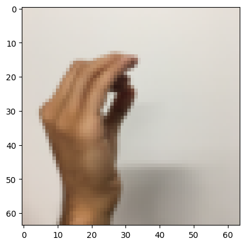

Convolutional Neural Networks (CNNs) are implemented in TensorFlow as instances of built classes CNN and CNN_Reg that inherit from tensorflow.keras.Model. The resulting models are used in a multiclass classification problem, detecting how many fingers are raised on an image of a hand. By adding more convolutional layers, dense layers, and regularization we increase the test accuracy from 85.00% to 95.83% at the expense of increasing training time from ~15 seconds to ~40 minutes.
Author
Daniel J Smith
Published
April 28, 2024
import numpy as npimport matplotlib.pyplot as pltimport tensorflow as tffrom tensorflow.python.framework import opsfrom sklearn.model_selection import train_test_splitfrom utils import*versions()
# Example of an image from the datasetindex =9label = np.squeeze(Y_train_orig[:, index])plt.imshow(X_train_orig[index])print (f'y = {label}\n')
y = 4
# Example of an image from the datasetindex =26label = np.squeeze(Y_train_orig[:, index])plt.imshow(X_train_orig[index])plt.savefig('img/preview.png')print (f'y = {label}\n')
y = 2
# Example of an image from the datasetindex =594label = np.squeeze(Y_train_orig[:, index])plt.imshow(X_train_orig[index])print (f'y = {label}\n')
y = 0

print("Shape of X_train_orig: ", X_train_orig.shape)print("Shape of Y_train_orig: ", Y_train_orig.shape)
Shape of X_train_orig: (1080, 64, 64, 3)
Shape of Y_train_orig: (1, 1080)
We use one-hot-encoding to turn the multiclass label of each image (y = 0, 1, 2, 3, 4 or 5) into a binary label as illustrated in the following image:
# First, split the original training set into a new training set and a validation setX_train_orig, X_val_orig, Y_train_orig, Y_val_orig = train_test_split(X_train_orig, np.squeeze(Y_train_orig), test_size=0.15, random_state=42)# Then, normalize the input featuresX_train = X_train_orig/255.X_val = X_val_orig/255.X_test = X_test_orig/255.# Convert the output labels to one-hot vectorsY_train = convert_to_one_hot(Y_train_orig, 6).TY_val = convert_to_one_hot(Y_val_orig, 6).TY_test = convert_to_one_hot(Y_test_orig, 6).T# Print the shapes of the datasetsprint ("number of training examples = "+str(X_train.shape[0]))print ("number of validation examples = "+str(X_val.shape[0]))print ("number of test examples = "+str(X_test.shape[0]) +'\n')print ("X_train shape: "+str(X_train.shape))print ("Y_train shape: "+str(Y_train.shape))print ("X_val shape: "+str(X_val.shape))print ("Y_val shape: "+str(Y_val.shape))print ("X_test shape: "+str(X_test.shape))print ("Y_test shape: "+str(Y_test.shape))
number of training examples = 918
number of validation examples = 162
number of test examples = 120
X_train shape: (918, 64, 64, 3)
Y_train shape: (918, 6)
X_val shape: (162, 64, 64, 3)
Y_val shape: (162, 6)
X_test shape: (120, 64, 64, 3)
Y_test shape: (120, 6)
class CNN(tf.keras.Model):""" A Convolutional Neural Network (CNN) model implemented using TensorFlow's Keras API. The architecture of the model is: [CONV2D -> RELU -> MAXPOOL]*N -> FLATTEN -> [DENSE (ReLU activation)]*M-1 -> DENSE (Softmax activation from logits) Attributes: convs: List of convolutional layers. relus: List of ReLU activation functions. pools: List of max pooling layers. dense_layers: List of dense layers. flatten: Flatten layer to convert the 3D outputs to 1D. Methods: call: Implements the forward propagation for the model. """def__init__(self, input_shape, conv_params, dense_layer_dims):""" The constructor for CNN class. Parameters: input_shape (tuple): The shape of the input images. For example, (32, 32, 3) for a 32x32 RGB image. conv_params (list): A list of dictionaries where each dictionary contains the parameters for a conv layer. Each dictionary should have the following keys: 'filters' (int): The number of filters. 'kernel_size' (int or tuple): The size of the filters. 'strides' (int or tuple): The stride of the convolution. 'padding' (str or int): The padding strategy. Can be 'same', 'valid', or an integer. 'pool_size' (int or tuple): The size of the pooling window. For example: conv_params = [{'filters': 32, 'kernel_size': (3, 3), 'strides': (1, 1), 'padding': 'same', 'pool_size': (2, 2)}, {'filters': 64, 'kernel_size': (3, 3), 'strides': (1, 1), 'padding': 1, 'pool_size': (2, 2)}] dense_layer_dims (list): The number of neurons in each dense layer. For example, [512, 256, 10] for a network with three dense layers. """super(CNN, self).__init__()self.input_layer = tf.keras.layers.Input(shape=input_shape)self.convs = [tf.keras.layers.Conv2D(filters=params['filters'], kernel_size=params['kernel_size'], strides=params['strides'], padding=params['padding']) for params in conv_params]self.relus = [tf.keras.layers.ReLU() for _ in conv_params]self.pools = [tf.keras.layers.MaxPool2D(pool_size=params['pool_size'], strides=params['strides'], padding="same") for params in conv_params]self.flatten = tf.keras.layers.Flatten()self.dense_layers = [tf.keras.layers.Dense(dim, activation=("linear"if i==len(dense_layer_dims)-1else"relu")) for i, dim inenumerate(dense_layer_dims)]def call(self, inputs):""" Implements the forward propagation for the model. Parameters: inputs (tensor): The input images. Returns: tensor: The classification results. """ x = inputsfor conv, relu, pool inzip(self.convs, self.relus, self.pools): x = conv(x) x = relu(x) x = pool(x) x =self.flatten(x)for dense inself.dense_layers: x = dense(x)return x
Model 1 - CONVx2
The architecture of the first model is:
Input Layer: The input layer accepts images of shape (64, 64, 3), which corresponds to a 64x64 RGB image.
Convolutional Layer 1: The first convolutional layer has 8 filters, each of size (4, 4). The stride is 1, and the padding strategy is ‘same’, which means that zero-padding is used to preserve the spatial dimensions of the input.
ReLU Activation Function 1: The first ReLU activation function introduces non-linearity after the first convolutional layer.
Max Pooling Layer 1: The first max pooling layer uses a pooling window of size (4, 4) and a stride of 1. The padding strategy is ‘same’.
Convolutional Layer 2: The second convolutional layer has 16 filters, each of size (2, 2). The stride is 1, and the padding strategy is ‘same’.
ReLU Activation Function 2: The second ReLU activation function introduces non-linearity after the second convolutional layer.
Max Pooling Layer 2: The second max pooling layer uses a pooling window of size (8, 8) and a stride of 1. The padding strategy is ‘same’.
Flatten Layer: The flatten layer reshapes the 3D output of the previous layer into a 1D vector.
Output Layer: The output layer is a dense layer with 6 neurons. The activation function is linear, but when calculating the loss during training, a softmax activation function is applied to the logits because from_logits=True is used in the loss function. This means that the model’s output is expected to be logits and the softmax activation function is applied to convert these logits to probabilities when calculating the loss.
pred = np.argmax(model.predict(X_test), axis=1)print_mislabeled_images(classes, X_test, Y_test_orig, pred, number=5)
4/4 ━━━━━━━━━━━━━━━━━━━━ 0s 14ms/step
Model 2 - CONVx2 + DENSEx3
The architecture of the second model is:
Input Layer: The input layer accepts images of shape (64, 64, 3), which corresponds to a 64x64 RGB image.
Convolutional Layer 1: The first convolutional layer has 8 filters, each of size (4, 4). The stride is 1, and the padding strategy is ‘same’, which means that zero-padding is used to preserve the spatial dimensions of the input.
ReLU Activation Function 1: The first ReLU activation function introduces non-linearity after the first convolutional layer.
Max Pooling Layer 1: The first max pooling layer uses a pooling window of size (4, 4) and a stride of 1. The padding strategy is ‘same’.
Convolutional Layer 2: The second convolutional layer has 16 filters, each of size (2, 2). The stride is 1, and the padding strategy is ‘same’.
ReLU Activation Function 2: The second ReLU activation function introduces non-linearity after the second convolutional layer.
Max Pooling Layer 2: The second max pooling layer uses a pooling window of size (8, 8) and a stride of 1. The padding strategy is ‘same’.
Flatten Layer: The flatten layer reshapes the 3D output of the previous layer into a 1D vector.
Dense Layer 1: The first dense layer has 128 neurons and uses a ReLU activation function.
Dense Layer 2: The second dense layer has 64 neurons and uses a ReLU activation function.
Dense Layer 3: The third dense layer has 32 neurons and uses a ReLU activation function.
Output Layer: The output layer is a dense layer with 6 neurons. The activation function is linear, but when calculating the loss during training, a softmax activation function is applied to the logits because from_logits=True is used in the loss function. This means that the model’s output is expected to be logits and the softmax activation function is applied to convert these logits to probabilities when calculating the loss.
pred = np.argmax(model2.predict(X_test), axis=1)print_mislabeled_images(classes, X_test, Y_test_orig, pred, number=5)
4/4 ━━━━━━━━━━━━━━━━━━━━ 0s 22ms/step
Model 3 - CONVx4 + DENSEx3
The architecture of the third model is:
Input Layer: The input layer accepts images of shape (64, 64, 3), which corresponds to a 64x64 RGB image.
Convolutional Layer 1: The first convolutional layer has 8 filters, each of size (4, 4). The stride is 1, and the padding strategy is ‘same’, which means that zero-padding is used to preserve the spatial dimensions of the input.
ReLU Activation Function 1: The first ReLU activation function introduces non-linearity after the first convolutional layer.
Max Pooling Layer 1: The first max pooling layer uses a pooling window of size (4, 4) and a stride of 1. The padding strategy is ‘same’.
Convolutional Layer 2: The second convolutional layer has 16 filters, each of size (2, 2). The stride is 1, and the padding strategy is ‘same’.
ReLU Activation Function 2: The second ReLU activation function introduces non-linearity after the second convolutional layer.
Max Pooling Layer 2: The second max pooling layer uses a pooling window of size (8, 8) and a stride of 1. The padding strategy is ‘same’.
Convolutional Layer 3: The third convolutional layer has 32 filters, each of size (2, 2). The stride is 1, and the padding strategy is ‘same’.
ReLU Activation Function 3: The third ReLU activation function introduces non-linearity after the third convolutional layer.
Max Pooling Layer 3: The third max pooling layer uses a pooling window of size (4, 4) and a stride of 1. The padding strategy is ‘same’.
Convolutional Layer 4: The fourth convolutional layer has 64 filters, each of size (2, 2). The stride is 1, and the padding strategy is ‘same’.
ReLU Activation Function 4: The fourth ReLU activation function introduces non-linearity after the fourth convolutional layer.
Max Pooling Layer 4: The fourth max pooling layer uses a pooling window of size (4, 4) and a stride of 1. The padding strategy is ‘same’.
Flatten Layer: The flatten layer reshapes the 3D output of the previous layer into a 1D vector.
Dense Layer 1: The first dense layer has 128 neurons and uses a ReLU activation function.
Dense Layer 2: The second dense layer has 64 neurons and uses a ReLU activation function.
Dense Layer 3: The third dense layer has 32 neurons and uses a ReLU activation function.
Output Layer: The output layer is a dense layer with 6 neurons. The activation function is linear, but when calculating the loss during training, a softmax activation function is applied to the logits because from_logits=True is used in the loss function. This means that the model’s output is expected to be logits and the softmax activation function is applied to convert these logits to probabilities when calculating the loss.
pred = np.argmax(model3.predict(X_test), axis=1)print_mislabeled_images(classes, X_test, Y_test_orig, pred, number=5)
4/4 ━━━━━━━━━━━━━━━━━━━━ 1s 37ms/step
The CNN_Reg Class
While the above models are improving, they all show signs of overfitting. For example, the validation loss starting to increase again at the end of training.
Regularization techniques will help us to see further improvements while counteracting this overfitting.
We can adapt the class CNN into a new class CNN_Reg by including the option to add dropout layers after each convolutional/dense layer, and including non-zero L2 regularization parameters in the dense layers.
Code
class CNN_Reg(tf.keras.Model):""" A Convolutional Neural Network (CNN) model implemented using TensorFlow's Keras API including dropout layers and L2_reg in the Dense layers The architecture of the model is: [CONV2D -> RELU -> DROPOUT -> MAXPOOL]*N -> FLATTEN -> [DENSE (ReLU activation) -> DROPOUT]*M-1 -> DENSE (Softmax activation from logits) Attributes: convs: List of convolutional layers. relus: List of ReLU activation functions. dropouts: List of dropout layers. pools: List of max pooling layers. dense_layers: List of dense layers. flatten: Flatten layer to convert the 3D outputs to 1D. Methods: call: Implements the forward propagation for the model. """def__init__(self, input_shape, conv_params, dense_params):""" The constructor for CNN_Reg class. Parameters: input_shape (tuple): The shape of the input images. For example, (32, 32, 3) for a 32x32 RGB image. conv_params (list): A list of dictionaries where each dictionary contains the parameters for a conv layer. Each dictionary should have the following keys: 'filters' (int): The number of filters. 'kernel_size' (int or tuple): The size of the filters. 'strides' (int or tuple): The stride of the convolution. 'padding' (str or int): The padding strategy. Can be 'same', 'valid', or an integer. 'pool_size' (int or tuple): The size of the pooling window. 'dropout' (float): The dropout rate for the dropout layer after the conv layer. dense_params (list): A list of dictionaries where each dictionary contains the parameters for a dense layer. Each dictionary should have the following keys: 'units' (int): The number of neurons in the dense layer. 'dropout' (float): The dropout rate for the dropout layer after the dense layer. 'l2_reg' (float): The L2 regularization factor. """super(CNN_Reg, self).__init__()self.input_layer = tf.keras.layers.Input(shape=input_shape)self.convs = [tf.keras.layers.Conv2D(filters=params['filters'], kernel_size=params['kernel_size'], strides=params['strides'], padding=params['padding']) for params in conv_params]self.relus = [tf.keras.layers.ReLU() for _ in conv_params]self.dropouts = [tf.keras.layers.Dropout(params['dropout']) for params in conv_params]self.pools = [tf.keras.layers.MaxPool2D(pool_size=params['pool_size'], strides=params['strides'], padding="same") for params in conv_params]self.flatten = tf.keras.layers.Flatten()self.dense_layers = [tf.keras.layers.Dense(params['units'], activation=("linear"if i==len(dense_params)-1else"relu"), kernel_regularizer=tf.keras.regularizers.l2(params['l2_reg'])) for i, params inenumerate(dense_params)]self.dense_dropouts = [tf.keras.layers.Dropout(params['dropout']) for params in dense_params]def call(self, inputs):""" Implements the forward propagation for the model. Parameters: inputs (tensor): The input images. Returns: tensor: The classification results. """ x = inputsfor conv, relu, dropout, pool inzip(self.convs, self.relus, self.dropouts, self.pools): x = conv(x) x = relu(x) x = dropout(x) x = pool(x) x =self.flatten(x)for dense, dropout inzip(self.dense_layers, self.dense_dropouts): x = dense(x) x = dropout(x)return x
Model 4 - CONVx5 + DENSEx4 + REGULARIZATION
The architecture of the fourth model is:
Input Layer: The input layer accepts images of shape (64, 64, 3), which corresponds to a 64x64 RGB image.
Convolutional Layer 1: The first convolutional layer has 8 filters, each of size (4, 4). The stride is 1, and the padding strategy is ‘same’. After the convolutional layer, a ReLU activation function introduces non-linearity, and a dropout layer is applied with a rate of 0.25.
Max Pooling Layer 1: The first max pooling layer uses a pooling window of size (4, 4).
Convolutional Layer 2: The second convolutional layer has 16 filters, each of size (4, 4). The stride is 1, and the padding strategy is ‘same’. After the convolutional layer, a ReLU activation function introduces non-linearity, and a dropout layer is applied with a rate of 0.25.
Max Pooling Layer 2: The second max pooling layer uses a pooling window of size (8, 8).
Convolutional Layer 3: The third convolutional layer has 32 filters, each of size (2, 2). The stride is 1, and the padding strategy is ‘same’. After the convolutional layer, a ReLU activation function introduces non-linearity, and a dropout layer is applied with a rate of 0.25.
Max Pooling Layer 3: The third max pooling layer uses a pooling window of size (4, 4).
Convolutional Layer 4: The fourth convolutional layer has 64 filters, each of size (2, 2). The stride is 1, and the padding strategy is ‘same’. After the convolutional layer, a ReLU activation function introduces non-linearity, and a dropout layer is applied with a rate of 0.25.
Max Pooling Layer 4: The fourth max pooling layer uses a pooling window of size (4, 4).
Convolutional Layer 5: The fifth convolutional layer has 128 filters, each of size (2, 2). The stride is 1, and the padding strategy is ‘same’. After the convolutional layer, a ReLU activation function introduces non-linearity, and a dropout layer is applied with a rate of 0.25.
Max Pooling Layer 5: The fifth max pooling layer uses a pooling window of size (4, 4).
Flatten Layer: The flatten layer reshapes the 3D output of the previous layer into a 1D vector.
Dense Layer 1: The first dense layer has 256 neurons. After the dense layer, a ReLU activation function introduces non-linearity, and a dropout layer is applied with a rate of 0.5. This layer also has L2 regularization with a factor of 0.001.
Dense Layer 2: The second dense layer has 128 neurons. After the dense layer, a ReLU activation function introduces non-linearity, and a dropout layer is applied with a rate of 0.5. This layer also has L2 regularization with a factor of 0.001.
Dense Layer 3: The third dense layer has 64 neurons. After the dense layer, a ReLU activation function introduces non-linearity, and a dropout layer is applied with a rate of 0.5. This layer also has L2 regularization with a factor of 0.001.
Dense Layer 4: The fourth dense layer has 32 neurons. After the dense layer, a ReLU activation function introduces non-linearity, and a dropout layer is applied with a rate of 0.5. This layer also has L2 regularization with a factor of 0.001.
Output Layer: The output layer is a dense layer with 6 neurons. There is no dropout after this layer. The activation function is linear, but when calculating the loss during training, a softmax activation function is applied to the logits because from_logits=True is used in the loss function. This means that the model’s output is expected to be logits and the softmax activation function is applied to convert these logits to probabilities when calculating the loss. This layer also has L2 regularization with a factor of 0.001.
With a regularized model we will train for far longer, epochs=100.
The hope is that the increased training time will give the model more chance to learn the intricacies of the data distribution while the regularization will stop the model from memorizing the distribution of the training data (overfitting).
pred = np.argmax(model4.predict(X_test), axis=1)print_mislabeled_images(classes, X_test, Y_test_orig, pred, number=5)
4/4 ━━━━━━━━━━━━━━━━━━━━ 1s 120ms/step
Remarks and Further Directions
CNNs of increasingly complex architectures achieved increasingly high accuracy scores on the test dataset, illustrating a neural network with more layers has a greater capability to learn complex patterns in its training data.
The misclassified images are often understandably misclassified. i.e. hands at weird angles to the camera, hands somewhat out of frame etc. This seems increasingly true for the more complex models, perhaps indicating that the extra layers included in later models allowed the models to make less mistakes on the easier images but still be stumped by the hardest. A more comprehensive error analysis would be required to make definite claims in this direction.
Data augmentation is a powerful technique that may allow the models to learn to classify even the hardest images by artificially increasing the number of these images in the dataset. I experimented using ImageDataGenerator from tensorflow.keras.preprocessing.image to augment the dataset. I feel that such augmentation would be most effective if it focused on the hardest images at weird angles, in weird poses etc. This might be the topic of a future post.
A more complex model has more parameters. The more complex the model the greater the training time required:
model1 had 2 convolutional layers and 1 dense layer (the output layer). 20 epochs of training took a real time of 14.5s and the resulting model scored 85.00% on the test dataset.
model3 had 4 convolutional layers and 4 dense layers (including the output layer). 20 epochs of training took a real time of 2min 1s and the resulting model scored 89.17% on the test dataset.
model4 had 5 convolutional layers, 5 dense layers (including the output layer) and regularization (such as dropout layers). 100 epochs of training took 39min 57s and the resulting model scored 95.83% on the test dataset, a remarkable performance gain.
The focus in this notebook was on the training of increasingly complex CNNs to observe the increases in training time and test accuracy gained from the addition of more convolutional and dense layers. In a real application it would be worthwhile to consider hyperparameter tuning. The hyperparameters learning_rate, beta_1, beta_2, epsilon of the Adam optimizer were left at their default values throughout. The minibatch size was fixed at 64 and not was varied.
There was no focus on the choices of Convolutional layer specific hyperparameters such as the stride, padding and filter size. I am interested to see how tuning over such parameters might affect performance. I aim to learn the intuition guiding choices of such parameters.
It does not seem particularly sensible to commit to a model of such complexity like model4 that takes ~40min to train while still leaving so many hyperparameters at their default values. Achieving a high-performance model might be more practically achievable by using a less complex model that requires less time to train. The reduced computational expense of training would allow for faster iterations and more extensive hyperparameter searches to be conducted. The development advantage of faster interations may well outweigh the increase in accuracy gained by using a more complex model with more layers.
I am working towards building CNNs using only NumPy and hope this will be the content of future posts.